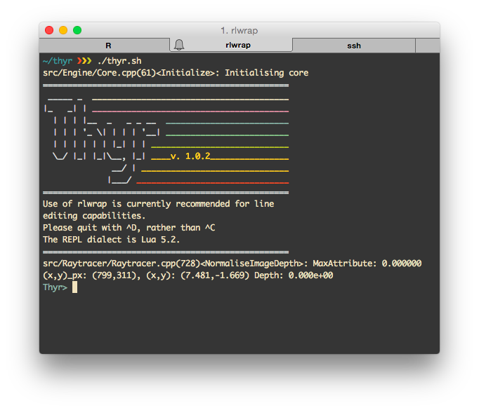

Thyr
Simulating Microwave Emission from Solar Flares
Chris Osborne (2087801)
Project Aims
Increased reolution simulation of microwave (MW) emission from flares, in particular the foot regions.
- Not resolvable by modern radio astronomy equipment.
- Produce an initial idea of what we may see.
Focus on gyrosynchrotron (GS) emission.
- First analytically described by Ramaty in 1969.
- Mildly relativistic electrons (\(\gamma \sim 5\)) spiralling through a magenetic field.
GS Simulation
- Computer simulation of GS Emission is not a new idea.
- First program produced by Ramaty in an early FORTRAN.
- We can directly trace our lineage back to that program.
Computer Simulation
- Why now?
- Modern computers are many orders of magnitude more powerful than when Ramaty wrote his original simulation.
- Can afford to be "profligate" with computational resources (within reason)
- The simulation of \(j\) and \(k\) is typically less than 50ms per frequency - on this laptop!
Design: Start with the Desired Output...

An emission map plotted in MATLAB.
Design: ...And with Prior Art

Output from PJAS' gyro3d (IDL)
Interface

Two columns?
Pls?
- Arghhsdfsd
- asdfadfs
- asdf
fdfddf

This thing shows a thing
A bit of maths?
\( \begin{equation} \int_a^{b+1} x^{2x+3}dx = \text{something} \label{eq:test} \tag{eq1} \end{equation} \)
Look at equation \eqref{eq:test}; it's pretty messed up!